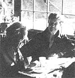

As we've noted several times in these pages, Helen and Scott Nearing are light years ahead of most of us when it comes to getting back to the land and living a life of voluntary simplicity. As well they should be, since they originally homesteaded a run-down farm in Vermont's Green Mountains away back in the autumn of 1932.
Life was good for the Nearings on that mini-farm . . . until the slopes around them exploded into ski resorts in the early 50's, forcing Helen and Scott to move on to a rocky inlet on the coast of Maine and start all over again.
And that's where you'll find the Nearings today: still clearing brush, still building honest stone houses (Helen and Scott are famous for their stone houses/, and still raising most of their vegetarian diet themselves in unbelievably productive wholistic gardens . . . just as they've been doing for nearly 50 years.
Naturally (in more ways than one), the Nearings have learned a few things about homesteading and getting back to basics over the years. And, lucky for all of us, they've agreed to share some of that knowledge with MOTHER's readers in a regular question and answer column. If you'd like to get in on the action, send your question or questions about self-sufficient living on the land to Helen and Scott Nearing, THE Mother Earth News (restricted) , P.O. Box 70, Hendersonville, N.C. 28791. And please don't expect personal replies to your queries. The most important and most frequently asked questions will be answered here-and here only-where we all can read what the Nearings have to say.
The two of you-through your writing and public appearances-have had a profound effect on many people in the "outside world". However, most homesteaders don't live your sort of dual lifestyle. Do you feel that people who work solely toward their own self-sufficiency are really turning their backs on the serious moral issues of the day and, instead of speaking out, are "sticking their heads in organic soil"?
In our opinion, homesteaders do not necessarily "cop out" when they turn to country life. Many such people find that rural living can leave them with enough free time and energy to engage in worthwhile social and political activities. The fact of the matter is that men and women who are willing to work for serious moral issues will do so, regardless of where or how they live . . . while those who do not share such concerns will avoid the Issues and pursue their own pleasures, whether they live in a large city or on a backwoods farm.
I recently sold my country house-in which I'd lived alone for three years-and returned to San Francisco . . . a place where my heart most definitely is not! It seems that my often enjoyable and always challenging experiences with rural life have soured me on "civilization".
I must also admit, however, that I sometimes found living alone in the country to be painful. My neighbors were all firmly established in their own family units . . . and-through no unkindness-weren't able to offer much companionship to an unattached individual.
Therefore, though I want very much to lead a self-sufficient life, I know that I don't want to try to do so by myself again! Where and how might a person look to meet potential spouses/partners who share the homesteading dream?
Under the best of circumstances, a solitary life leaves much to be desired (although there are, of course, advantages -as well as disadvantages-to every situation). We would most certainly advise against trying to homestead alone . . . since we feel it would be next to impossible for a single person to deal with the many problems that come up in the day-to-day course of rural existence.
Keep on looking for the partner you need. (Have you tried reading through the "Positions and Situations" section in this magazine?)
I have a friend who eats fragments of eggshell (not the entire shell, but a few chips) every time he dines on an egg. Furthermore, when he eats fruits or vegetables, he routinely consumes the skins, seeds, and all (he does not, however, eat apple seeds . . . since he considers them to be toxic). My associate also munches on grass from his lawn. (He claims that it is an exceptionally good source of vitamin C, and goes on to assert that it is safe to eat almost all green or yellow flowers and grasses.) In your opinion, are such dietary practices healthful or harmful?
Being vegetarians, Scott and I don't eat eggs . . and therefore don't consume eggshells. We do, however, prefer to eat our fruits and vegetables with the skins on (except for such thick-peeled varieties as bananas, oranges, and avocados). We have also eaten grass and made it into a vitamin-rich juice, although we don't recommend the indiscriminate eating of green and yellow flowers and grasses: After all, buttercups are yellow, and quite poisonous.
Your friend does sound just a little odd . . . but then, aren't we all?
I have a question about mulching that I hope you can answer for me. Gardener Ruth Stout claims (or so I've been told) that she hasn't plowed, weeded, or fertilized her gardens in nearly 14 years! As I understand it, her method involves simply covering the plot with straw mulch, then planting, picking, and canning!
Do you folks employ a similar technique? I'd appreciate your sharing your views on the advantages or disadvantages of year-round mulching. I'd been under the impression that it's best to turn mulch under to help aerate the soil . . . but am now wondering if the extra work involved is really necessary.
I don't usually get excited about gardening, because of all the labor involved. Ms. Stout seems to have taken most of the work out of growing crops, though . . . which means that I might be able to have a garden and enough spare time to do what I enjoy most . . . go fishing!
Ruth Stout learned her mulch-gardening method from Scott, who first told her about the No-Diggers Association in England (to which he had belonged for decades). Furthermore, toe haven't plowed our garden plot for 26 years. Our work does involve turning over the soil-using a hand cultivator-after every rain or watering, however. This practice effectively eliminates unwanted plant growth between the rows, killing the weeds while they're still small.
Ruth Stout spreads her garbage on the surface of her gardens, while Scott and I compost ours-with seaweed-before applying it to the beds as a mulch . . . and we do think that the extra work of composting and hand cultivating is rewarded by extra garden neatness and efficiency.
We feel that going fishing is a real waste of your time, however, and that such "sport" is cruel. Why not spend the same hours on a productive garden?
My husband and I, and our three children, have homesteaded for the past ten years and managed to make a success of it. However, despite the fact that we live in a lovely area, there are times when I feel a strong desire to get away and experience other places. My husband, on the other hand, is perfectly happy staying where we are . . . and has no interest in spending any of our hard-earned money on a "frivolous vacation".
I realize that your lectures take you away from your home on occasion, and thus offer you a change of scene. I think that travel can be very valuable, even if it serves to do nothing more than make one appreciate his or her home. Would you share your opinion on this matter?
I can't say that either of us really ever feels a need to take a vacation, but-when we do travel to speak or conduct research-we certainly enjoy the varied surroundings and experiences that are thus made available to us. We rarely take "frivolous vacations", of course. When we leave home, it's to do a job and then return as quickly as possible.
Naturally, if we ever had to choose between being eternally banned from the city or forever removed from country life, we would vastly prefer exile from the city.
|
 |
|
|